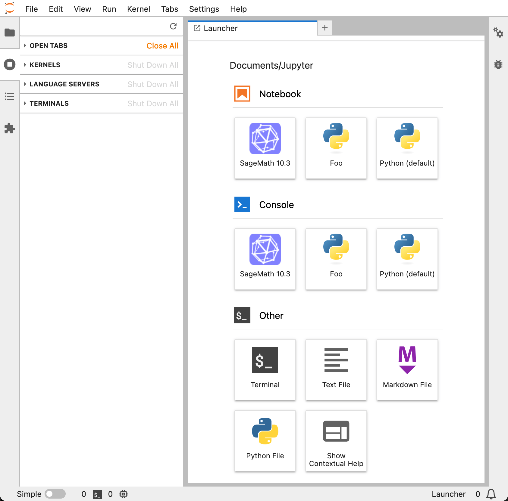
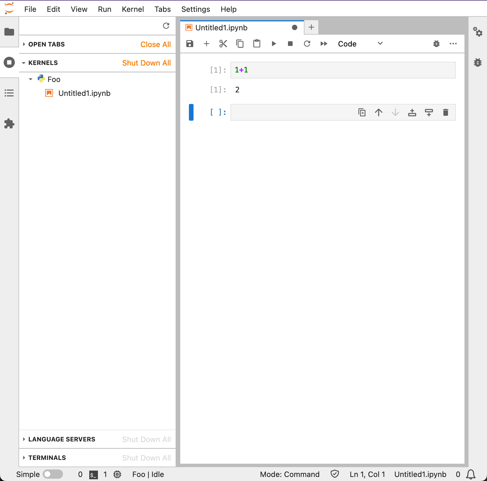

JupyterLab¶
Project URL¶
Project description¶
JupyterLab is a highly extensible, feature-rich notebook authoring application and editing environment, and is a part of Project Jupyter, a large umbrella project centered around the goal of providing tools (and standards) for interactive computing with computational notebooks.
A computational notebook is a shareable document that combines computer code, plain language descriptions, data, rich visualizations like 3D models, charts, graphs and figures, and interactive controls. A notebook, along with an editor like JupyterLab, provides a fast interactive environment for prototyping and explaining code, exploring and visualizing data, and sharing ideas with others.
JupyterLab is a sibling to other notebook authoring applications under the Project Jupyter umbrella, like Jupyter Notebook and Jupyter Desktop. JupyterLab offers a more advanced, feature rich, customizable experience compared to Jupyter Notebook.
Installation instructions¶
First, install Pixi. Please note that Pixi installation and configuration instructions are outside of the scope of this document, although if you use Homebrew, you may use it to quickly install Pixi:
Ensure that the following directories exist:
mkdir -p -- \
"${HOME}/.jupyterlab" \
"${HOME}/.taskfile/jupyterlab" \
"${HOME}/Documents/Jupyter" \
"${HOME}/Library/LaunchAgents"
Place the Pixi manifest file for an isolated JupyterLab environment in the ~/.taskfile/jupyterlab
directory:
# vim: set ft=toml :
[project]
name = 'jupyterlab'
channels = ['conda-forge']
platforms = [
# 'osx-64',
'osx-arm64',
]
[dependencies]
ipywidgets = '*'
jupyterlab = '*'
pixi-kernel = '*'
python = '3.13.*'
[pypi-dependencies]
jupyterlab-quarto = '*'
Create the JupyterLab environment, then remove JupyterLab's default kernels:
pushd -q -- "${HOME}/.taskfile/jupyterlab"
pixi update
pixi install
find -- .pixi/envs/default/share/jupyter/kernels -mindepth 1 -delete
popd -q
Add this JupyterLab configuration file to the ~/.jupyter directory:
# vim: set ft=python :
from pathlib import Path
c = get_config() # noqa:F821
c.ExtensionApp.open_browser = False
c.FileContentsManager.preferred_dir = str(Path("Documents").joinpath("Jupyter"))
c.IdentityProvider.token = ""
c.KernelSpecManager.ensure_native_kernel = False
c.ServerApp.ip = "localhost"
c.ServerApp.local_hostnames = ["localhost"]
c.ServerApp.open_browser = False
c.ServerApp.port = 8888
c.ServerApp.port_retries = 0
c.ServerApp.root_dir = str(Path.home())
Now let's create a launchd service that will make it easy to automatically start and stop
JupyterLab. Add this JupyterLab launchd service definition to the ~/Library/LaunchAgents
directory, editing usernames, pathnames and the PATH and TZ environment variables as needed:
<?xml version="1.0" encoding="UTF-8"?>
<!-- vim: set ft=xml : -->
<!DOCTYPE plist PUBLIC "-//Apple//DTD PLIST 1.0//EN" "http://www.apple.com/DTDs/PropertyList-1.0.dtd">
<plist version="1.0">
<dict>
<key>Disabled</key>
<false/>
<key>EnvironmentVariables</key>
<dict>
<key>PATH</key>
<string>/Users/manselmi/.prefix/bin:/usr/local/bin:/usr/bin:/bin:/usr/sbin:/sbin</string>
<key>TZ</key>
<string>UTC</string>
</dict>
<key>KeepAlive</key>
<dict>
<key>SuccessfulExit</key>
<false/>
</dict>
<key>Label</key>
<string>org.jupyter.jupyterlab.server</string>
<key>ProgramArguments</key>
<array>
<string>/Users/manselmi/.taskfile/jupyterlab/.pixi/envs/default/bin/jupyter-lab</string>
</array>
</dict>
</plist>
If you would like to learn more about launchd, please see Creating Launch Daemons and Agents.
The launchd service we created will run when loaded, so let's load the service:
Please note that upon future logins, the service will automatically be loaded and hence automatically started.
Now let's confirm that JupyterLab is up and running. Navigate your browser to http://localhost:8888. If you see a JupyterLab page, then so far so good.
Register Python environment with JupyterLab¶
Let's create a Python environment specific to the foo project. In addition to Python, the
environment must contain ipykernel.
Create this project-specific Pixi manifest file:
# vim: set ft=toml :
[project]
name = 'foo'
channels = ['conda-forge']
platforms = [
# 'osx-64',
'osx-arm64',
]
[dependencies]
ipykernel = '*'
python = '3.13.*'
Create the Python environment:
Create a kernel to register the environment with JupyterLab:
-
The kernel name is set to
foo. -
The kernel display name is set to
Foo.
Now let's confirm that we can start a notebook using our new kernel. Navigate your browser to
http://localhost:8888. You should see a screen like this with the Foo
kernel available.

Create a new notebook with the Foo kernel and run something simple like 1+1.

Congratulations! 🥳
Maintenance¶
Routine maintenance tasks may be automated with Task. Please install it. Please note that Task installation and configuration instructions are outside of the scope of this document, although if you use Homebrew, you may use it to quickly install Task:
Place these taskfile directories
in the ~/.taskfile/include directory (create it if necessary), and ensure that the environment
variable TASKFILE_INCLUDE_ROOT_DIR is set to the same directory, as in the example
~/.zshrc configuration file.
Additionally, place this JupyterLab taskfile in the ~/.taskfile/jupyterlab directory:
# vim: set ft=yaml :
#
# https://taskfile.dev
version: '3'
set: ['errexit', 'nounset', 'pipefail']
vars:
USER_ID:
sh: 'id -u'
includes:
launchctl:
taskfile: '{{ env "TASKFILE_INCLUDE_ROOT_DIR" }}/launchctl'
vars:
DOMAIN_TARGET: 'gui/{{ .USER_ID }}/'
SERVICE_NAME: 'org.jupyter.jupyterlab.server'
SERVICE_PATH: '{{ env "HOME" }}/Library/LaunchAgents/{{ .SERVICE_NAME }}.plist'
pixi:
taskfile: '{{ env "TASKFILE_INCLUDE_ROOT_DIR" }}/pixi'
tasks:
upgrade:
aliases: ['default']
cmds:
- task: 'launchctl:bootout'
- task: 'pixi:update'
- task: 'pixi:install'
- task: 'remove-default-kernels'
- task: 'launchctl:bootstrap'
remove-default-kernels:
cmds:
- 'find -- .pixi/envs/default/share/jupyter/kernels -mindepth 1 -delete'
Here are some common tasks:
To stop the JupyterLab service, run:
To start the JupyterLab service (if not already running), run:
To upgrade the JupyterLab environment and remove any default kernel, run:
pushd -q -- "${HOME}/.taskfile/jupyterlab"
task launchctl:bootout
task pixi:update
task pixi:install
task remove-default-kernels
task launchctl:bootstrap
popd -q
To perform the previous operations with a single command, run:
To disable JupyterLab, within ~/Library/LaunchAgents/org.jupyter.jupyterlab.server.plist change
to
then run:
To uninstall JupyterLab, first disable it and then run: